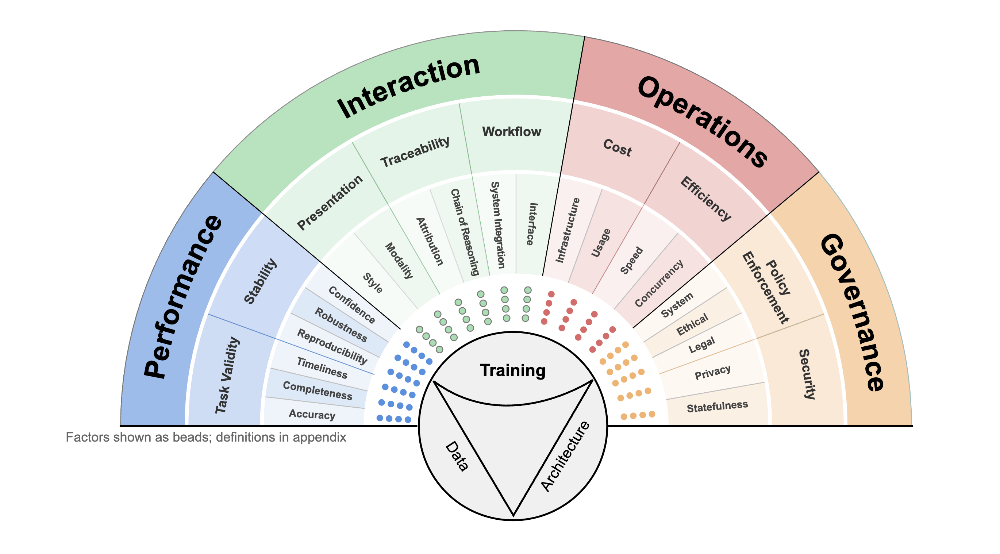

A structured approach to evaluating LLM utility. Click on domains to filter, and click cards to explore components.

Loading data...
No components found matching your filters.
Component Overview
/
This component evaluates within the dimension. Below are the specific metrics associated with it.
Metric Detail
Foundational elements of LUX
Determines depth and breadth. Dictates what the model learns, inherited biases, and generalization contexts.
Governs representation and transformation. Defines internal mechanisms enabling generation and behavior.